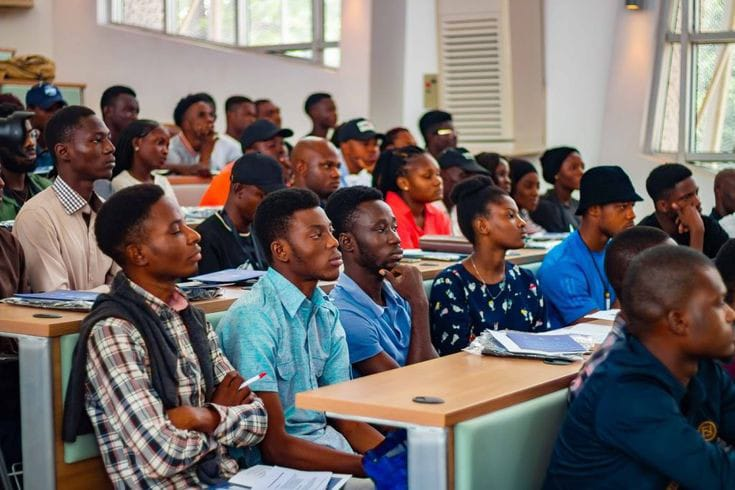

Dive into the hidden truths of academic life. Through real-life
stories, discover the consequences of malpractice and the lessons
they teach us. Together, let's champion honesty, integrity, and a
brighter academic future.
Samantha always excelled in her studies, but when she encountered
a tough physics course, she grew desperate. One day, she found an
online service offering answers for a small fee. She submitted the
purchased answers for her final project and passed with flying
colors. What she didn't know was that the professor had set up a
decoy assignment. The university immediately flagged her
submission as plagiarism, and Samantha lost her scholarship.
Worse, her name spread through the academic community, leaving her
blacklisted from graduate programs.
Full Story
The Exam Sabotage
During a crucial exam, David noticed a group of students passing
around small notes. Determined to protect his grade, he quietly
told the professor. The cheating students were caught, but they
blamed David, spreading rumors about him across campus. Even
though he did the right thing, David became an outcast among his
peers. His integrity cost him friendships, and he began to
question whether reporting the misconduct was worth the price.
Full Story
The Stolen Thesis
James had worked tirelessly on his thesis for months. As he
prepared to submit it, his friend Alex asked to take a quick look
for inspiration. Trusting Alex, James handed over his work. A few
weeks later, James discovered Alex had submitted a near-identical
thesis to another professor. Feeling betrayed, James confronted
him, but Alex denied everything. They were both called into the
dean's office for an investigation, and while Alex was expelled,
James's reputation was forever stained by the ordeal.
Full Story
The Group Project Nightmare
In a group project for her sociology class, Maria did most of the
work while her partners, Jake and Ella, contributed nothing. At
the last minute, Jake handed in a different version of the report
with his and Ella's names listed first. When the professor graded
the projects, Jake and Ella took all the credit, leaving Maria
furious. She decided to report the incident, but without evidence,
the professor couldn't lower their grades. Maria realized too late
that documentation was crucial in standing up against academic
dishonesty.
Full Story
The Ghostwriter
Sarah was an accomplished writer but struggled with economics.
When her friend Tom offered to write her final paper in exchange
for money, she reluctantly agreed. Sarah submitted the paper,
thinking she had evaded trouble. But during the oral exam, her
professor asked a few probing questions that she couldn't answer.
The professor grew suspicious and launched an inquiry. Sarah's
degree was put on hold pending a disciplinary hearing, leaving her
future uncertain.Full Story
The Professor's Shortcut
Dr. Lewis was renowned for his research, but he was tired of the
tedious process of writing papers. He hired an undergraduate
student, Andrew, to write sections of his research articles. What
Dr. Lewis didn't anticipate was Andrew copying large parts of the
material from previously published work. When the plagiarized
material was discovered, Dr. Lewis was forced to retire early.
Andrew, on the other hand, faced expulsion and legal action for
his role in the scandal.
Full Story
Emeka's Suspension
Emeka was a third-year undergraduate student studying mathematics.
He had always struggled with the subject, despite his best
efforts. His lecturer, Professor Agu, was notorious for being
strict and demanding, and Emeka felt like he was under a lot of
pressure to perform well.Full Story
Chizoba's Phone Mishap
Chizoba was a bright and ambitious undergraduate student studying
mathematics. She had always excelled in the subject, and her
lecturer, Professor Ezeh, had praised her for her exceptional
problem-solving skills. But during her final exams, Chizoba found
herself struggling to recall a crucial formula. She had studied
hard for the exam, but her mind was a blank. Panicked, she decided
to sneak a peek at her phone, which she had hidden under her desk.
Full Story

The Garrison Scandal
The mathematics department was rocked by a cheating scandal when
several students were caught using a sophisticated cheating ring.
The ring, which was led by a group of senior students, used
advanced technology to transmit answers to students during exams.
The scandal led to a massive investigation, and several students
were expelled or suspended.Full Story
Nneoma's Redemption
Nneoma was a struggling undergraduate student who had always found
mathematics challenging. Despite her best efforts, she just
couldn't seem to grasp the concepts. Feeling desperate, Nneoma
decided to cheat during an exam. She carefully hid her notes and
formulas in her pocket, hoping to sneak a peek during the exam.
Full Story